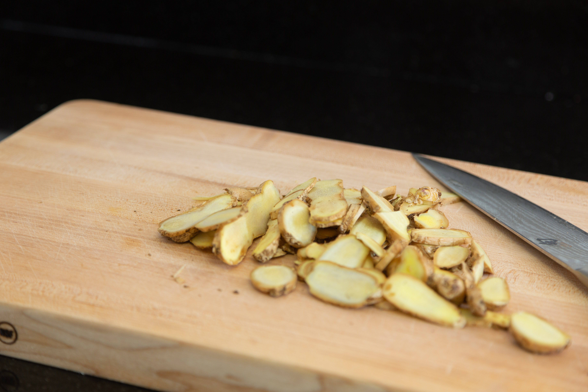

Fresh Ginger Tea
On a hot Miami day I usually reach for iced tea, but some days I want something with a little kick. Enter, ginger tea. I guess this isn't quite "tea" since it's just boiled ginger water, but I prefer to call it tea.
Anyways, boiling the ginger flavors the water and gives it a delicious ginger flavor that's slightly sweet. Add some honey for sweetness or some cayenne pepper for something spicy. It works hot or cold, plus, you could use the already boiled ginger to make Candied Ginger.
Ingredients
- 12 Cups of Water
- 2 Medium Sized Ginger Roots
Required Equipment
- Large Pot
- Knife & Cutting Board
- Measuring Cups
Directions
- Slice the 2 medium ginger roots into pieces that are around ¼ inch thick 
- Add the 12 cups of water & all of the ginger slices to your large pot and place on high heat until the mixture boils
- Once the mixture boils, lower the heat to a medium flame and let the mixture simmer for around 15-20 minutes (or to taste)
- Allow the mixture to cool for 10 minutes. Then, strain the mixture into a pitcher, chill & enjoy hot or cold
*optional Reserve 1 cup of the boiled ginger to make candied ginger slices